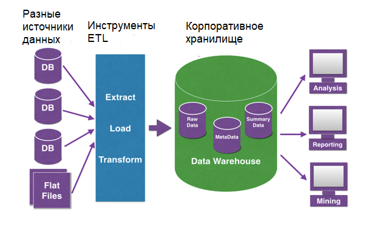
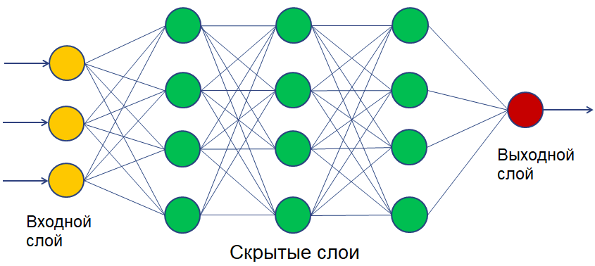
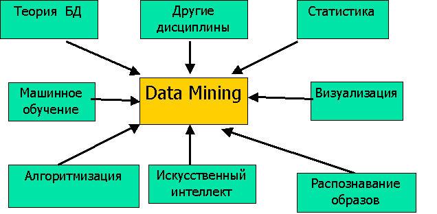
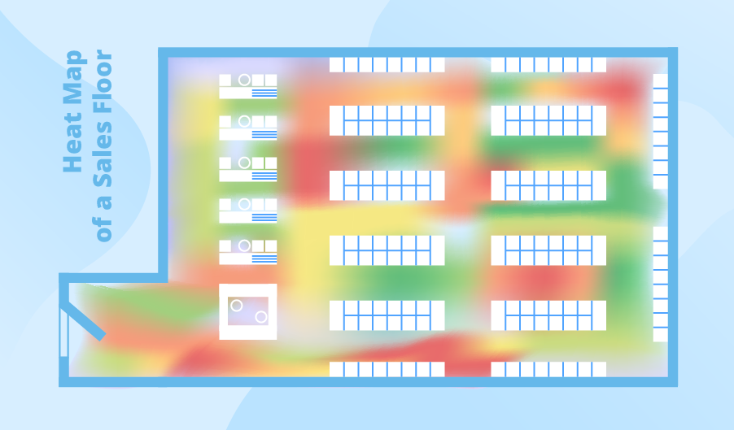

Технологии big data: как анализируют большие данные, чтобы получить максимум прибыли
Большие данные мало просто собрать — их нужно как-то использовать, например, чтобы строить прогнозы развития бизнеса или проверять маркетинговые гипотезы. А для использования данные требуется структурировать и анализировать. Расскажем, какие существуют методы и технологии big data и как они помогают обрабатывать большие данные.
Что это.
Обычно анализом Big Data занимаются компьютеры, но иногда его поручают и людям. Для этих целей существует краудсорсинг — привлечение к решению какой-либо проблемы большой группы людей.
Как это работает.
Предположим, у вас есть большой объем сырых данных. Например, записи о продажах магазинов, где товары часто записаны с ошибками и сокращениями. К примеру, дрель Dexter с аккумулятором на 10 мАч записана как «Дрель Декстр 10 мАч», «Дрель Dexter 10», «Дрель Dexter акк 10» и еще десятком других способов. Вы находите группу людей, которые готовы за деньги вручную просматривать таблицы и приводить такие наименования к одной форме.
Зачем и где применяют.
Краудсорсинг хорош, если задача разовая и для ее решения нет смысла разрабатывать сложную систему искусственного интеллекта. Если анализировать большие данные нужно регулярно, система, основанная на Data Mining или машинном обучении, скорее всего, обойдется дешевле краудсорсинга. Кроме того, машины лучше справятся со сложным анализом, основанном на математических методах, например, со статистикой или имитационным моделированием.
Что это. Работа с big data часто связана со сбором разнородных данных из разных источников. Чтобы работать с этими данными, их нужно собрать воедино. Просто загрузить их в одну базу нельзя — разные источники могут выдавать данные в разных форматах и с разными параметрами. Тут и поможет смешение и интеграция данных — процесс приведения разнородной информации к единому виду.
Как это работает. Чтобы использовать данные из разных источников, используют следующие методы:
Приводят данные к единому формату: распознают текст с фотографий, конвертируют документы, переводят текст в цифры.
Дополняют данные. Если есть два источника данных об одном объекте, информацию от первого источника дополняют данными от второго, чтобы получить более полную картину.
Отсеивают избыточные данные: если какой-то источник собирает лишнюю информацию, недоступную для анализа, ее удаляют.
Зачем и где применяют. Смешение и интеграция данных нужны, если есть несколько разных источников данных, и нужно анализировать эти данные в комплексе.
Например, ваш магазин торгует офлайн, через маркетплейсы и просто через интернет. Чтобы получить полную информацию о продажах и спросе, надо собрать множество данных: кассовые чеки, товарные остатки на складе, интернет-заказы, заказы через маркетплейс и так далее. Все эти данные поступают из разных мест и обычно имеют разный формат. Чтобы работать с ними, их нужно привести к единому виду.
Традиционные методы интеграции данных в основном основаны на процессе ETL — извлечение, преобразование и загрузка. Данные получают из источников, очищают и загружают в хранилище. Специальные инструменты экосистемы больших данных от Hadoop до баз данных NoSQL также имеют собственный подход для извлечения, преобразования и загрузки данных.
После интеграции большие данные подвергаются дальнейшим манипуляциям: анализу и так далее.

Что это.
Обычные компьютеры хорошо считают, но плохо справляются с некоторыми задачами, которые легко даются человеку. Например, вспомним пример выше: машине трудно понять, что «Дрель Декстр 10 мАч», «Дрель Dexter 10», «Дрель Dexter акк 10» — это одно и то же устройство.
Чтобы машина могла мыслить как человек, требуется построить в ней структуру, похожую на человеческий мозг. Такими структурами и являются нейронные сети. Они состоят из множества искусственных нейронов, которые при обучении образуют связи и потом могут анализировать информацию.
Как это работает.
Нейронные сети работают по единому алгоритму — получают на входе данные, «прогоняют» их через сеть своих нейронов и на выходе выдают результат, например, относят входные данные к определенной группе.
Чтобы нейросеть работала, ее нужно сначала обучить — этот процесс называется машинным обучением.
Возьмем пример. Представим, что нужно научить нейросеть различать мужчин и женщин по фото.
Для этого понадобится:
| 1. Построить нейросеть — запрограммировать искусственные нейроны воспринимать входные данные и создавать связи. | |||||||||
| 1. Передать нейросети очищенную выборку — базу лиц, однозначно отмеченных как женские или мужские. Так нейросеть поймет, по каким критериям отличать лица, то есть научится это делать. | |||||||||
| 1. Протестировать нейросеть — передать ей новую очищенную выборку, но не сообщать, какие лица мужские, а какие женские. Это поможет понять, как часто нейросеть ошибается, и приемлем ли для вас такой уровень ошибок. | |||||||||
После обучения и тестов можно использовать нейросеть для обработки big data.

Зачем и где применяют. Нейросети обычно используют, если нужно сортировать данные, классифицировать их и на основе входной информации принимать какие-то решения. Обычно нейросети используют для тех задач, с которыми справляется человек: распознать лицо, отсортировать фотографии, определить мошенническую банковскую операцию по ряду признаков. В таких задачах нейросеть заменяет десятки людей и позволяет быстрее принимать решения.
У Mail.Ru Cloud Solutions есть сервис для разработки приложений на основе машинного обучения. С ним ваши разработчики смогут быстро создавать нейронные сети без поддержки собственной дорогостоящей инфраструктуры.
Что это. Часто нужно не просто анализировать и классифицировать старые данные, а делать на их основе прогнозы о будущем. Например, по продажам за прошлые 10 лет предположить, какими они будут в следующем году.
В таких прогнозах помогает предиктивная аналитика big data. Слово «предиктивный» образовано от английского «predict» — «предсказывать, прогнозировать», поэтому такую аналитику еще иногда называют прогнозной.
Как это работает. Задача предиктивной аналитики — выделить несколько параметров, которые влияют на данные. Например, мы хотим понять, продолжит ли крупный клиент сотрудничество с компанией.
Для этого изучаем базу прошлых клиентов и смотрим, какие «параметры» клиентов повлияли на их поведение. Это может быть объем покупок, дата последней сделки или даже неочевидные факторы вроде длительности общения с менеджерами. После этого с помощью математических функций или нейросетей строим модель, которая сможет определять вероятность отказа для каждого клиента и предупреждать об этом заранее.
Зачем и где применяют. Предиктивная аналитика нужна везде, где требуется строить прогнозы. Одними из первых ее начали использовать трейдеры, чтобы предсказывать колебания курсов на бирже. Сейчас такую аналитику используют в разных сферах, чтобы предсказывать:
продажи и поведение клиентов в маркетинге;
время доставки грузов в логистике;
мошенничество в банковской и страховой сферах;
рост компании и финансовые показатели в любых сферах.
На предприятиях и фабриках внедряют платформы индустриального интернета вещей: датчики собирают массивы данных о работе оборудования, а потом системы аналитики, в том числе на основе машинного обучения, обрабатывают их и предсказывают поломки и сроки технического обслуживания. Такие IoT-платформы можно развернуть в облаке: это снижает затраты на разработку, управление и эксплуатацию IoT-сервисов и решений.
Что это. Иногда возникает ситуация, в которой нужно посмотреть, как поведут себя одни показатели при изменении других. Например, как изменятся продажи, если повысить цену. Ставить такие эксперименты в реальном мире неудобно — это дорого и может привести к серьезным убыткам. Поэтому чтобы не экспериментировать с реальным бизнесом, можно построить имитационную модель.
Как это работает. Представим, что мы хотим посмотреть, как разные факторы влияют на продажи магазина. Для этого берем данные: продажи, цены, количество клиентов и все остальное, имеющее отношение к магазину. На основе этих данных мы строим модель магазина.
Потом вносим в нее изменения — повышаем и понижаем цены, меняем число продавцов, увеличиваем поток посетителей. Все эти изменения влияют на другие показатели — мы можем выбрать самые удачные нововведения и внедрить их в настоящем магазине.
Имитационное моделирование немного похоже на предиктивную аналитику. Только мы предсказываем будущее не по реальным, а по гипотетическим данным.
Имитационную модель можно построить и без big data. Но чем больше данных, тем точнее модель, так как она учитывает больше факторов.
Зачем и где применяют. Везде, где нужно проверять какие-нибудь гипотезы, но тестировать их на реальном бизнесе будет слишком дорого. Например, масштабное изменение цен на долгий срок может обрушить бизнес, так что перед таким шагом лучше провести тест на модели.
Важно помнить, что даже в масштабной модели часто бывают учтены не все факторы. Поэтому моделирование может дать неверный результат, переносить модель в реальность нужно с учетом всех рисков.
Что это. Суть статистики в том, чтобы собрать данные, посчитать их по определенным критериям и на выходе получить конкретный результат, обычно в процентах.
Одна из проблем статистики — недостоверные результаты на маленьких выборках. Например, из 20 000 человек 15 000 недовольны обслуживанием, но компания опросила только 100 — и в выборку попало 80 лояльных клиентов. Получится, что 80% опрошенных довольны обслуживанием, что не совпадает с реальностью.
Сделать статистику достовернее помогают большие данные. Чем больше информации вы собрали, тем точнее результат. Если вместо 100 клиентов опросить 10 000, результаты опроса уже можно считать достоверными.
Как это работает. Для получения точных статистических результатов используют разные методы. Вот некоторые из них:
Простой подсчет процентного соотношения.
Вычисление средних значений данных, иногда распределенных по группам.
Корреляционный анализ, который помогает выявить взаимосвязи и понять, как изменение одних данных повлияет на другие.
Метод динамических рядов, который оценивает интенсивность и частоту изменений данных с течением времени.
Зачем и где применяют. Везде, где для анализа данные нужно посчитать. Часто статистический анализ используют как часть других технологий — например, он необходим для имитационного моделирования или предиктивной аналитики.
Что это.
Big data — это большой массив разнородных данных. Чтобы они принесли пользу, в них нужно найти какие-то полезные закономерности: сходства, различия, общие категории и так далее. Процесс поиска таких закономерностей и называют data mining — добыча данных, или глубинный анализ данных.
Как это работает.
Мы берем большие данные и «добываем» из них новые полезные данные с помощью различных технологий: всевозможных методов классификации, моделирования и прогнозирования, основанные на применении деревьев решений, нейросетей, генетических алгоритмов и других методик. К методам data mining часто относят и статистические методы.
Data mining решает несколько основных задач:
Классификация — распределение данных по заранее известным классам.
Кластеризация — распределение данных на группы по степени похожести друг на друга. Например, составление разных портретов покупателей на основе их поведения в магазине.
Ассоциация — поиск повторяющихся образцов данных. Например, одинаковых наборов продуктов в чеках покупателей.
Регрессионный анализ — нахождение важных факторов, влияющих на какой-либо заданный параметр.
Анализ отклонений — выявление нетипичных данных, резко отличающихся от обычных.
Зачем и где применяют.
Везде, где из больших данных нужно извлекать какие-то тенденции и закономерности. Решение большинства задач компании, связанных с данными, сводится к той или иной задаче data mining или их комбинации. Например, оценить риски можно с помощью регрессионного анализа, сегментировать покупателей с помощью кластеризации, предсказать спрос по выявлению ассоциаций в данных и так далее.

Что это. Чтобы результаты аналитики было удобнее оценивать и использовать, для работы с big data используют визуализацию данных. То есть представляют их в виде графиков, диаграмм, гистограмм, 3D-моделей, карт и пиктограмм.
Как это работает. Обычно визуализация — это конечный этап, демонстрация результатов анализа, проведенного другими способами. Например, вы построили имитационную модель и выводите результат ее работы в виде графика, который показывает колебание продаж в зависимости от изменений цены. Или сравнили продажи в разных регионах и визуализировали эти данные на карте, раскрасив регионы в разные цвета.
Обычно инструменты для анализа умеют и визуализировать данные, так как без визуализации результаты работы отобразить сложно. Для визуализации данных есть множество инструментов, например: Tableau, Qlik, Orange.
Зачем и где применяют. Везде, где с данными должны работать люди. Например, если нужно оценить результаты обработки или продемонстрировать их менеджеру или руководителю.

Краудсорсинг — ручной анализ силами большого количества людей.
Смешение и интеграция данных — приведение данных из разных источников к одному виду, уточнение и дополнение данных.
Машинное обучение и нейронные сети — создание программ, которые умеют анализировать и принимать решения, выстраивая логические связи.
Предиктивная аналитика — предсказание будущего на основе собранных данных.
Имитационное моделирование — построение моделей на основе больших данных, которые помогают провести эксперимент в компьютерной реальности, без влияния на реальное положение вещей.
Статистический анализ — подсчет данных по формулам и выявление в них тенденций, сходств и закономерностей.
Data Mining — технология добычи новой значимой информации из большого объема данных.
Визуализация — представление больших данных и результатов их анализа в виде удобных графиков и схем, понятных человеку.
Источник: https://mcs.mail.ru/blog/tekhnologii-big-data-kak-analiziruyut-bolshie-dannye